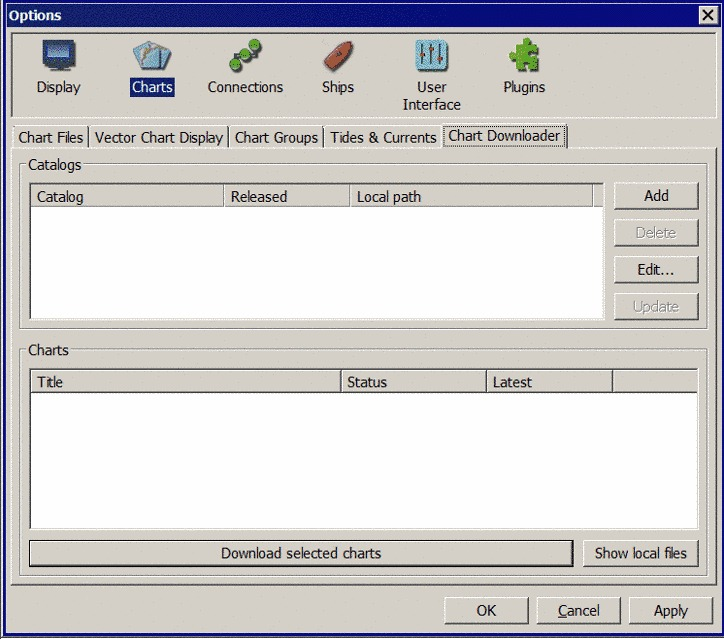
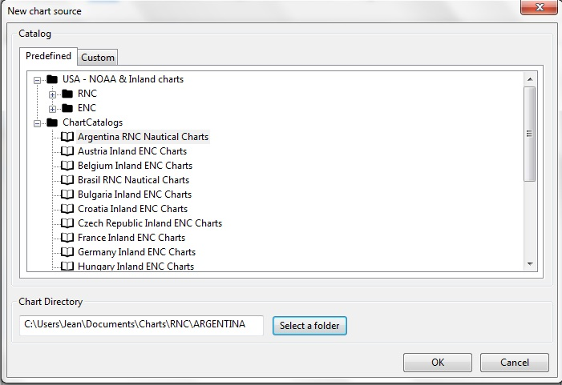
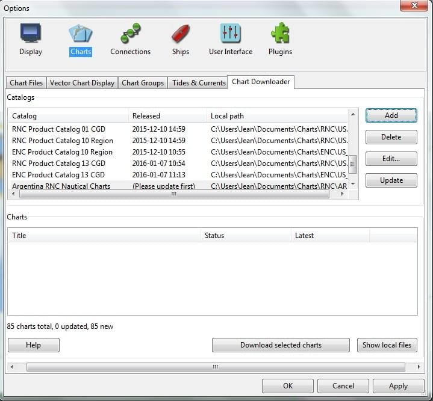
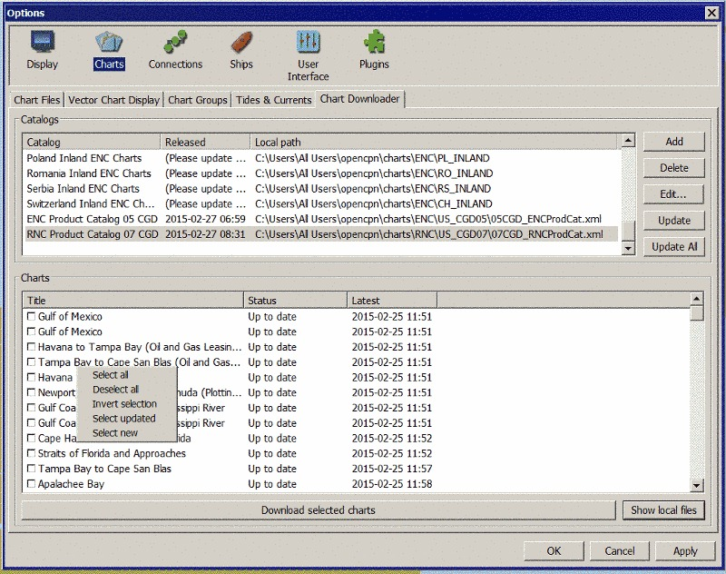
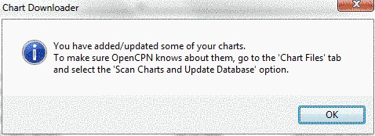
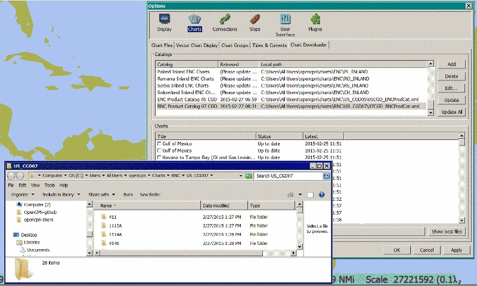
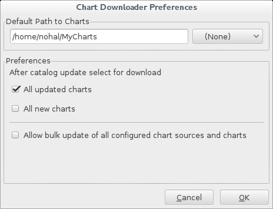

The Chart Downloader Plugin is now included in your OpenCPN installation. It lets you download, install and keep up to date the navigational charts provided by various free governmental sources worldwide directly from within OpenCPN's Toolbox.
The supported charts include both the raster and vector charts for the US waters provided by the NOAA, official raster navigational charts published by Argentina, Brasil and New Zealand (covering also huge areas of the Pacific ocean) as well as electronic charts of the inland waterways of the USA and more than a dozen European Union countries.
For Manual Installation Instructions but Chart Downloader is preferred.
The Chart Downloader relies on catalogs of charts. A catalog is an XML file containing the names of charts along with the most recent chart update date and time together with the Internet address of the actual chart data. Before being able to download any charts we have to configure and download one or more chart catalogs.
The catalogs are provided by the agencies publishing the charts (NOAA and the Army Corps of Engineers in the USA) and by the ChartCatalogs project created by the author of this plugin. When a catalog is loaded the Chart Downloader automatically scans the existing charts on your computer looking for updated or new charts listed in the catalog.
In the current version of OpenCPN, Chart Downloader is automatically included.
This is what the plugin looks like when first opened by clicking Chart Downloader

The screen has two sections.
The top section is for Chart Catalogs.
Some chart sources provide many different catalogs for the same set of charts. For example, in the USA, NOAA provides chart catalogs for each state, region and Coast Guard district as well as the huge complete set. There are also separate catalogs for raster (RNC) and vector (ENC) NOAA charts. The first step in getting new charts is to select the appropriate Chart Catalog, make sure you think first though - having everything is not always the best option to organize your charts, so especially in the US, consider using more smaller catalogs over the one with the complete set of thousands of charts.
Click the button to get the dialog. There are catalogs for all the free chart sources worldwide known at the time of the release of this plugin. The catalogs are organized in a folder structure. Open each folder to see subfolders. Open subfolders to see catalogs. Select any catalog you like by clicking the catalog description.

After clicking the catalog you want, the “Chart Directory” will be automatically filled in. This is the directory on your computer where the catalog and the charts for this catalog will be downloaded. If the recommended directory is acceptable click “OK”.
First time users will find it much easier to accept this default. Otherwise you can use the “Browse” button to browse to another directory where you want the catalog and charts to be kept. Once you are happy with the Chart Directory click “OK”.
In case you selected a path to save the charts not covered by the current OpenCPN configuration, the plugin configures it for you.
You can check the configuration on the “Chart Files Tab”. For more details about managing your charts, you should definitely read Chart Files Tab - Installing Charts

Now you will see the Chart Catalog listed in the Catalogs section. Note that it will say (Please update first) under the Released column.
Click the catalog name then click the “Update” button. The Downloader will retrieve the catalog from the server. After the catalog is saved a list of charts will appear in the lower section. Each chart has a check box. If the box is checked then that chart is scheduled to be downloaded. Depending on the Preferences you selected earlier the boxes will be automatically checked. You can check or uncheck individual charts or use the right mouse button to check and uncheck groups of charts.
The US agencies update their catalogs on a standard weekly schedule, related to the Notice to Mariners releases. The catalogs from the Chart Catalogs project are updated occasionally, without any fixed schedule. You should select the chart source and click the Update every once in a while to get the latest chart updates.
You can select the charts to be downloaded by ticking the check boxes in the list of charts. In case you want to select multiple charts at once, right-click in Chart Window will show a context menu, allowing you to
charts. You can configure the plugin to automatically preselect the updated and/or new charts after an update of the chart catalog in the preferences.

NOTE: In addition to the right-click chart selection, you can Highlight a chart, then use “Spacebar” to check or uncheck. Then hit the down or up button and repeat. This is faster than Mouse clicking for groups of files.
After selecting the charts for download, click the “Download selected charts” button to start downloading the charts. It can be a lengthy progress and a dialog box showing progress will pop as each chart is downloaded. If any charts do not download correctly a warning will pop up at the end. The status of the charts that have been downloaded successfully will change to Up to Date. Sometimes a slow or flaky Internet connection will cause a chart not to download and the status will remain the same. You can just click the Download selected charts button again give them a second chance.
A recent improvement is the use of a separate CPU thread (when it is available) for downloading charts.
Chart Folder Tab and Chart Group Tab reminder. A reminder box will pop up to tell you that you have to notify OpenCPN where to find the charts. We’ll do that in the next step.
Upon Closing the Chart Downloader will automatically complete a Scan and Database Rebuild of the Chart Database, so the charts will be ready for use. For vector charts, one sensible step remains. Go to Options→Charts→Chart Files and press the button Prepare all ENC Charts. This will preprocess all new vector charts and updates, and prevent delays when actually using the charts
If you should see the dialog below please Update the internal chart database and the plugin will remind you about it with a dialog.

For more details about managing your charts, you should definitely read Chart Files Tab - Installing Charts
To make it short, go to Options > Chart Files Tab and tick the Scan Charts and Update Database checkbox and when you close the Toolbox using the OK, your newly downloaded charts will be scanned and made available for viewing.
The button Show Local Files on the lower right will open your default file manager in a separate window, which allows you to check files and directories easily.

You can customize the behavior of the plugin to certain extent. To access the preferences, select the Chart Downloader plugin on the Options > Plugins Tab and click on the Preferences button

The Default Path to Charts option allows you to set the top directory for all your charts, used to construct the suggested locations for the chart sources you configure.
The All updated charts and All new charts check boxes tell the plugin which charts you want to select for download automatically upon a catalog update.
The Allow bulk update of all configured chart sources and charts checkbox adds a new button to the Chart Downloader Tab, allowing you to update and download all the charts you are managing using the plugin with a single click. The behavior of this function depends on the aforementioned check boxes - either it downloads only new or updated charts or both.